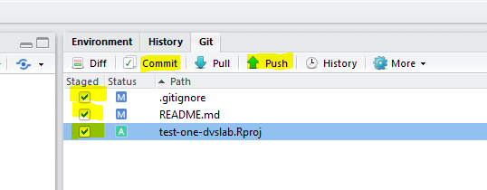

This step was covered in the Outline Section. In that section you have associated your GitHub Personal Access Token with your local git config file. This must be done on each workstation you use to push to a GitHub repository.
Make a New Repository
Create a new RStudio Project. The name of the Directory/Project should be test-one. (How to video - 40 seconds)
In the Rstudio Console: library(usethis)
In the Console: use_git(message = "first commit for my helo world")
Pull the GitHub changes to your local workstations via Rstudio’s git client
Congratulations. You’ve just created your first GitHub repository. Now you can see your repository. congratulations. you’ve created a repo. On your local file-system you should still see the unstaged README.md. Both the local and the remote (GitHub) have the LICENSE.md file created at GitHub. you’ve created a repo.
Push: Edit and Commit
Continue in RStudio. This time you’ll make local changes by editing your local repository. After saving the changes you’ll add and commit the changes. Lastly, you will push your changes up to the remote repository.
Edit
In the Files Pane, Open the README.md file
In the Editor Pane, modify your README with Markdown
Make a Sub-heading with the word “Purpose”
i.e. ## Purpose
After a blank line type: This is my first Git repository. I'm going to push this file to GitHub via RStudio. Hello World.
Save the changes to this file
Commit & Push
In the Git pane:
Check each of the staged files
Click commit and provide a message: this is my first edit of a README and supporting files
Click the commit button to engage your commit process with the message, then close
Click the Push arrow, then close, then close the commit dialogue box

View your changes back at GitHub: https://github.com/<<your-ID>>/test-one
Pull
The next time you open your project in RStudio the first step you should take is to Pull from the GitHub repo. Then make your changes, then commit and push. If you forget to Pull you may have to resolve some conflicts. For best results, get into the habit of pulling before you make edits.